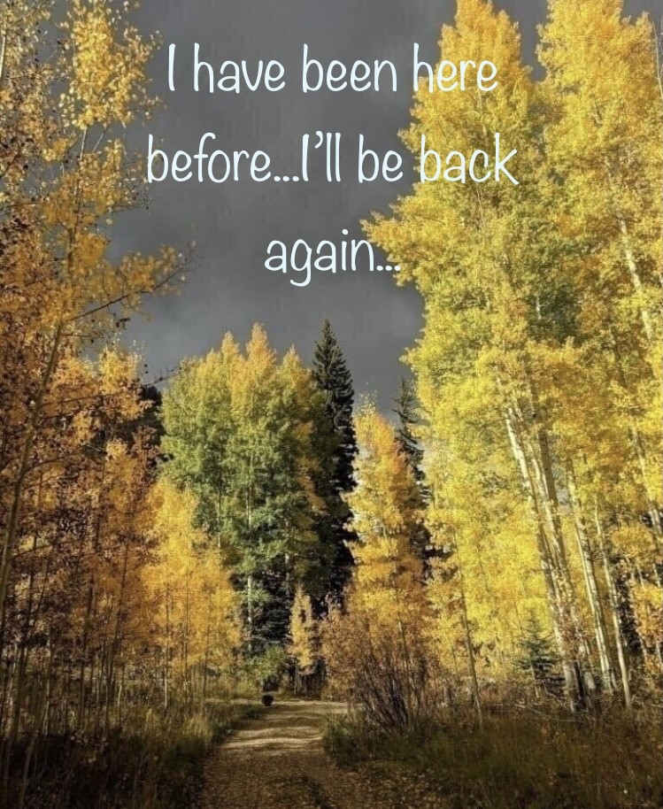
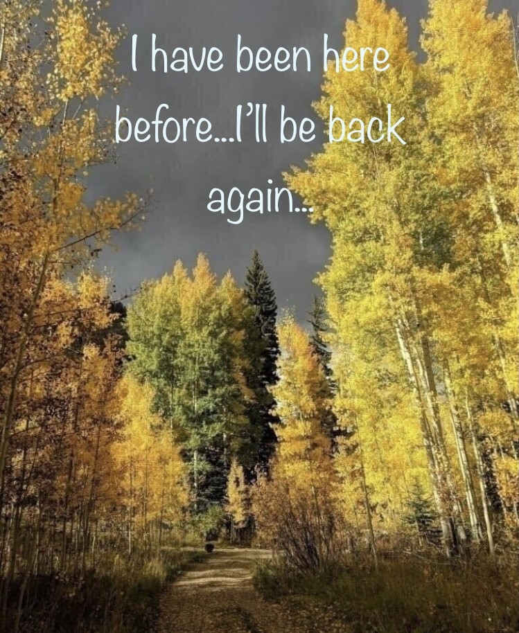

The world around me
My family and I travel a lot.
We like to travel more because we enjoy new sights and places, people and experiences,
different ways of living, another culture,food, languages, new knowledge.
One of the best things about travel is exploring the natural beauty of the world, we love nature so much - magic mountains and clearest lakes, autumn colourful forests and mysterious rivers, bridges, waterfalls and gardens inspire all of us.
Sometimes it’s better to let go of the schedule and take a spontaneous adventure.
You never know what you may find, and that’s the beauty of it! My husband and I make our own travel route , which includes several countries to visit, usually we travel by car.
Most Beautiful destinations, our favourite places in europe
 
